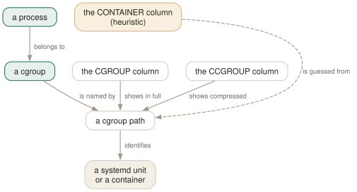

Day 13
cgroups and containers
Ten shortening rules that turn a hundred-character path into something you can read in a column.
By the end of today you can
- read a compressed cgroup path back into the systemd unit or container it came from
- tell which processes belong to a container and hide them when they are noise
- build a screen that groups a machine by service rather than by process
The column that says what a process is part of
Every column so far describes a process in isolation. The cgroup columns describe what it belongs to — which systemd unit, which login session, which container — and on a server that is usually the more useful question.
The catch is width. A real cgroup path runs to sixty or a hundred and twenty characters, and a process list has perhaps forty to spare. So htop offers the path twice: CGROUP in full, headed CGROUP (raw), and CCGROUP compressed, headed CGROUP (compressed).

CONTAINER is guessed from the same path by heuristics, so it is a hint where CCGROUP is a fact.The ten rules, on real output
Side by side on an ordinary systemd desktop, the compression speaks for itself:
PID CGROUP (compressed) CGROUP (raw)
1 /!init /init.scope
843 /[S]/systemd-journald /system.slice/systemd-journald.service
889 /[S]/systemd-udevd/udev /system.slice/systemd-udevd.service/udev
1227 /[S]/polkit /system.slice/polkit.service
5399 /[U:1000]/[session]/org.gnome.Shell@wayland
7575 /[U:1000]/[app]/!app-com.google.Chrome-7575
The rules, from the manual page and confirmed against the binary:
/*.slice→/[*]- The generic rule.
app.slicebecomes[app]. /system.slice→/[S]- The system services.
/user.slice→/[U]- The user sessions.
/user-*.slice→/[U:*]- One user, by UID — and it swallows the
/[U]immediately before it, so you get/[U:1000]rather than/[U]/[U:1000]. /machine.slice→/[M]- Machines and VMs.
/machine-*.scope→/[SNC:*]- A systemd-nspawn container. Uppercase for the monitor process.
/lxc.monitor.*→/[LXC:*]- An LXC monitor.
/lxc.payload.*→/[lxc:*]- An LXC payload — lowercase, and the distinction from the monitor is deliberate.
/*.scope→/!*- A scope. This is why PID 1 reads
/!init. /*.service→/*- The suffix is simply dropped, because on a systemd box almost everything is a service.
Containers
Two more columns, neither documented in the manual page and both visible in htop --sort-key help:
CONTAINER- The container's name — “guessed by heuristics”, in the binary's own words, from the cgroup path and namespace membership. Shows
/for a process that is not in a container. ISCONTAINER- Whether this process is inside a child container at all. The predicate behind the O toggle.
O hides every containerised process. On a laptop it appears to do nothing, because nothing matched; on a container host it removes most of the list and hands you back the host itself — kubelet, the runtime, the log shipper, sshd — which is otherwise drowned in several hundred rows belonging to somebody else's workload.
Today's habit
On any machine running systemd — which is to say nearly all of them — put CCGROUP somewhere you can see it. The single most common question on a server is “what is this process actually part of”, and until today your process list had no column that could answer it.
Tomorrow: the sharp edges, every place the manual page and the binary disagree, and where to go next.
New vocabulary
Keys
| Key | Does |
|---|---|
| O | Hide or show processes running in containers. A toggle, off by default. |
Options
| Option | Does |
|---|---|
CGROUP | The full cgroup path. Displayed as CGROUP (raw), and far too wide to keep on screen. |
CCGROUP | The same path, compressed by ten rules. Displayed as CGROUP (compressed). |
CONTAINER | The container's name, guessed by heuristics. Undocumented in the manual page. |
ISCONTAINER | Whether the process is inside a child container. Undocumented too. |
Today's configappend to ~/.config/htop/htoprc
A screen that groups the machine by service rather than by process. CCGROUP is the point of it: on a systemd box that one column turns an unreadable list of PIDs into 'which unit is this' at a glance, and it costs about a quarter of the width that the raw CGROUP column would. Sorted by CPU% so the noisy unit surfaces on its own.
screen:Containers=PID USER CONTAINER CCGROUP PERCENT_CPU M_RESIDENT Command
.sort_key=PERCENT_CPU
.sort_direction=-1
htop reads this file once, at startup, and there is no reload key: quit and start it again. Note that htop rewrites the file — comments and all — on a clean exit from any session in which you changed a setting.
Drillsdo these in a real terminal, today
Self-check
Answer out loud first, then unfold.
A row's CCGROUP reads /[U:1000]/[app]/!app-com.google.Chrome-7575. Reconstruct the real path and say what each piece meant.
It is /user.slice/user-1000.slice/app.slice/app-com.google.Chrome-7575.scope. Three rules fired: /user-*.slice became /[U:*] and swallowed the /user.slice that preceded it, the generic /*.slice rule turned app.slice into [app], and /*.scope became /!*.
So: a process in your user session, in the application slice, in a scope systemd created for Chrome when it was launched. The compression is not lossy in any way that matters — each bracket is a reversible abbreviation — and it turns 68 characters into 38.
The CONTAINER column shows / for every process on your laptop. Is the column broken?
No — nothing is in a container, so there is nothing to name. The column is filled by heuristics over the cgroup path and namespace membership, and when a process is simply running on the host it has no container name to report.
The manual page is no help here because it documents neither CONTAINER nor ISCONTAINER — both appear only in htop --sort-key help, where CONTAINER is described as “guessed by heuristics”. Treat it as a strong hint rather than an authority; CCGROUP is the column that never guesses.
Why does htop compress cgroup paths at all, rather than letting you scroll?
Because a raw cgroup path is routinely 60 to 120 characters and a process list has perhaps 40 to spare. An uncompressed column would either consume the whole screen or be truncated to /system.slice/sys, which distinguishes nothing — every row would start with the same dozen characters.
The compression is designed around exactly that: it shortens the structural parts, which are common to every row and therefore carry no information, and leaves the unit name, which is the only part that differs. That is why /[S]/nginx is genuinely as useful as /system.slice/nginx.service and fits in a tenth of the space.
You press O on a busy container host and half the list disappears. When is that the right thing to do?
When you are looking at the host rather than at the workloads. A Kubernetes node runs a few dozen host processes — kubelet, the container runtime, the log shipper, sshd — drowned in several hundred container processes that belong to somebody else's problem.
O gives you the host back. The inverse question, “which container is misbehaving”, is better answered by sorting on CCGROUP so that each container's processes group together, than by hiding anything. Two toggles, two different jobs.
Cheat sheet
CGROUP the raw path -- 60-120 chars; almost never worth the width
CCGROUP compressed -- the one to actually put on screen
CONTAINER container name -- HEURISTIC. '/' means 'not in one' [not in man]
O hide/show containerised processes [toggle]
the ten rules:
/*.slice -> /[*] /system.slice -> /[S]
/user.slice -> /[U] /user-*.slice -> /[U:*] (eats the /[U])
/machine.slice -> /[M] /machine-*.scope-> /[SNC:*]
/lxc.monitor.* -> /[LXC:*] /lxc.payload.* -> /[lxc:*]
/*.scope -> /!* /*.service -> /* (suffix dropped)
/[S]/nginx = /system.slice/nginx.service
/[U:1000]/[app]/!app-foo = /user.slice/user-1000.slice/app.slice/app-foo.scope
/!init = /init.scope
systemd's own escaping is passed through undecoded, so a cgroup path full of \x2d sequences is an awkward unit name rather than a bug.
Everything through Day 13
Keys
| Key | Does |
|---|---|
| Ctrl-L | Redraw the screen and recalculate, without waiting for the next tick. |
| Z | Pause and resume sampling. The screen freezes; the machine does not. |
| F10q | Quit. This is also the only exit that saves your settings. |
| UpDown | Move the selection one row. Alt-k and Alt-j do the same. |
| PgUpPgDn | Move the selection a screenful at a time. |
| HomeEnd | Jump to the first or the last process in the list. |
| LeftRight | Scroll the whole list sideways. Also Alt-h and Alt-l. |
| Ctrl-A^ | Scroll back to the start of the selected process's line. |
| Ctrl-E$ | Scroll to the end of the selected process's line. |
| Alt-UpAlt-Down | Pan the view without moving the selection. Shift-Up/Shift-Down too, if your terminal lets them through. |
| p | Toggle full program paths in Command. |
| m | Toggle merging exe, comm and cmdline into Command. |
| F3/ | Incremental search: move the selection to the next match. Does not hide anything. |
| F3 | While searching: jump to the next match. Shift-F3 goes backwards. |
| F4\ | Incremental filter: hide every row that does not match. |
| Enter | In the filter prompt: keep the filter and put the prompt away. |
| Esc | In the filter prompt: clear the filter. In search: cancel it. |
| u | Open the user menu and show only one user's processes. |
| Digits | Type a PID and the selection jumps to it. Silently — there is no prompt. |
| F6><. | Open the “Sort by” menu. All three punctuation aliases work. |
| I | Invert the sort direction. The arrow in the heading flips. |
| NPMT | Sort by PID, CPU%, MEM% and TIME. The top(1) compatibility keys. |
| F5t | Toggle tree view. The F5 label changes to List while you are in it. |
| +- | Expand or collapse the selected subtree. |
| * | Expand or collapse every subtree at once. |
| F | Follow: pin the selection to this process wherever it moves. |
| Space | Tag or untag the selected process. Tagged rows stay tagged until you clear them. |
| c | Tag the selected process and all of its children. |
| U | Untag everything. The most important key on this page. |
| F9k | Open the signal menu. Defaults to 15 SIGTERM. |
| F7] | Raise priority — lower the nice value. Root only. |
| F8[ | Lower priority — raise the nice value. Anyone can do this to their own. |
| } | Raise the autogroup priority. Shift-F7. Root only. |
| { | Lower the autogroup priority. Shift-F8. |
| a | Set CPU affinity: tick the CPUs this process may run on. |
| i | Set the I/O scheduling class and priority. Not in the manual page. |
| Y | Set the scheduling policy. Not in the manual page either. |
| l | List open files, by running lsof against the selected process. |
| s | Trace system calls, by running strace against it. |
| e | Show the process's environment. Not in the manual page. |
| w | Show the command line wrapped across the whole screen. |
| x | Show the process's active file locks. |
| b | Show a backtrace. Only if htop was compiled with it, which it usually was not. |
| F5 | Refresh the open screen. F3 and F4 search and filter it. |
| F8 | In the strace screen: toggle auto-scroll. F9 stops the trace. |
| # | Hide and show the header meters entirely. Not in the manual page. |
| F2SC | Open Setup, where meters are chosen. C is an undocumented alias. |
| F2SC | Open Setup. C is an alias the manual page does not mention. |
| F10 | Leave Setup. Labelled Done. |
| Space | In Setup: toggle the highlighted option, or add the highlighted meter. |
| K | Hide or show kernel threads. Hidden by default. |
| H | Hide or show userland threads. Shown by default — this is why your list is so long. |
| Tab | Move to the next screen. Shift-Tab goes back. |
| O | Hide or show processes running in containers. A toggle, off by default. |
Commands
| Command | Does |
|---|---|
htop | Start htop, reading ~/.config/htop/htoprc once at startup. |
htop -d 10 | Sample every 10 tenths of a second. Clamped to the range 1–100. |
htop -n 5 | Draw five frames, then exit on its own. Absent from the manual page. |
htop -V | Print the version. The -v in the SYNOPSIS does not exist. |
htop -F chrome | Start with the filter already applied. Multiple terms: -F 'nginx|php'. |
htop -p 1,843 | Show only these PIDs, and nothing else ever appears. |
htop -u | Show only your own processes. |
htop -u postgres | Show one user's processes. A numeric UID works too. |
htop -s PERCENT_MEM | Start sorted by a column. Forces list view. |
htop -s PERCENT_MEM -t | Sorted and in tree view — the one way to have both. |
htop --sort-key help | Print every sortable column name and what it means. |
htop -t=soft | Tree view with a stable cursor line. classic, soft and hard, or 0/1/2. |
htop --readonly | Disable every process- and system-changing feature for this session. |
htop --no-meters | Start with the header hidden. Gives the process list the whole terminal. |
htop -C | Monochrome. The bar segments become bold, normal and dim instead of colours. |
htop -U | ASCII instead of unicode for the graph meters. |
HTOPRC=~/x htop | Read (and write) a different config file. One config per machine, one shared home directory. |
chmod 444 ~/.config/htop/htoprc | Make the file read-only. htop then runs normally and stops clobbering it. |
htop --sort-key help | The authoritative column list, straight from the binary. Better than the manual page. |
Options
| Option | Does |
|---|---|
delay | Tenths of a second between samples in htoprc. Default 15, i.e. 1.5 s. |
M_VIRT | Address space the process has mapped. VIRT. Mostly promises, not memory. |
M_RESIDENT | Pages actually in RAM, shared ones counted in full. RES. |
M_SHARE | The part of RES that other processes also map. SHR. |
M_PRIV | Resident minus shared — what dies with the process. PRIV, a default column. |
M_SWAP | Pages of this process pushed out to swap. SWAP. |
M_PSS | Resident, but each shared page divided by its number of sharers. PSS. |
M_PSSWP | The same proportional treatment for swapped-out pages. PSSWP. |
M_EPSS | PSS plus PSSWP: the whole footprint, proportionally. EPSS. |
PERCENT_MEM | RES as a share of total RAM. MEM% — and it inherits RES's double counting. |
detailed_cpu_time | Split the CPU bar into irq, soft-irq, steal, guest and io-wait. Default off. |
header_layout | One to four columns, in fourteen width presets. Default two_50_50. |
column_meters_0 | The meters in the first header column, space-separated. |
column_meter_modes_0 | Their display modes: 1 bar, 2 text, 3 graph, 4 LED. |
highlight_changes | Highlight processes that are new or whose command line changed. Default off. |
highlight_changes_delay_secs | How long that highlight lasts. Default 5. |
enable_mouse | Let htop capture mouse events. Default on, which costs you terminal text selection. |
header_margin | Leave a blank line around the header. Default on. |
screen_tabs | Show the names of screen tabs above the list. Default on. |
fields | The legacy numeric column list. Silently overrides every screen: line. |
NLWP | How many threads this process has. The cheapest way to spot a thread pool. |
TGID | Thread group id — a thread's process. Equals PID for a process. |
STARTTIME | Wall-clock time the process started. Shown as START. |
ELAPSED | How long it has been running. Undocumented in the manual page. |
OOM | The OOM killer's score for this process. Who dies first under memory pressure. |
CTXT | Context switches counted over the refresh interval. A rate, not a lifetime total. |
PROCESSOR | Which CPU it last ran on. Shown as CPU. |
SCHEDULERPOLICY | The scheduling policy from Day 6's Y dialog. Undocumented in the manual page. |
SECATTR | The SELinux or AppArmor label. Undocumented, and very wide. |
show_thread_names | Show each thread's own name rather than its process's command. Default off. |
highlight_threads | Draw thread rows in a different colour. Default on. |
screen:NAME | Define a screen and its columns, in order, space-separated. |
.sort_key | The sort column for the screen defined immediately above. |
.sort_direction | -1 for descending, 1 for ascending. |
.tree_view | Whether this screen starts in tree view. Per-screen, like everything dotted. |
RCHAR | Bytes the process has read through read(). Counts cache hits — most of this never touched a disk. |
WCHAR | Bytes written through write(). Counted when the call returns, not when the data lands. |
RBYTES | Bytes actually fetched from the block layer. Real disk reads. |
WBYTES | Bytes actually sent to the block layer. |
CNCLWB | Write bytes cancelled — dirtied, then truncated or deleted before writeback. |
IO_READ_RATE | Block-layer read rate. Shown as DISK READ. |
IO_WRITE_RATE | Block-layer write rate. Shown as DISK WRITE. |
IO_RATE | The two rates added. Shown as DISK R/W, and the right default sort for an I/O screen. |
IO_PRIORITY | Scheduling class and priority: R realtime, B best-effort, id idle. |
PERCENT_IO_DELAY | Share of time blocked on synchronous block I/O. Needs delay accounting. |
PERCENT_CPU_DELAY | Share of time runnable but not scheduled. The number that proves CPU contention. |
PERCENT_SWAP_DELAY | Share of time waiting for pages to swap back in. |
CGROUP | The full cgroup path. Displayed as CGROUP (raw), and far too wide to keep on screen. |
CCGROUP | The same path, compressed by ten rules. Displayed as CGROUP (compressed). |
CONTAINER | The container's name, guessed by heuristics. Undocumented in the manual page. |
ISCONTAINER | Whether the process is inside a child container. Undocumented too. |